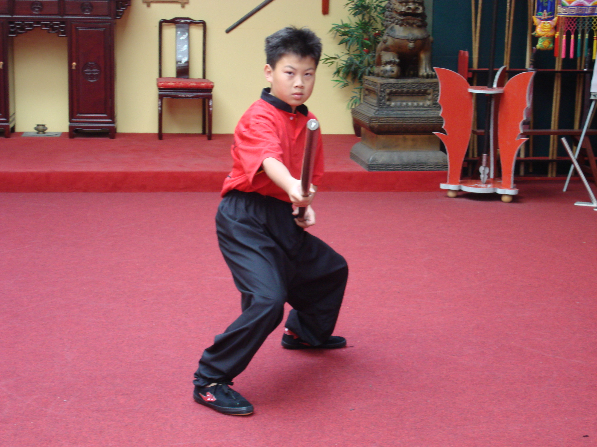

ABOUT ME
Early Life
I was born and raised in San Francisco, California with exposure to a diverse amount of culture. Through my family, I was raised with a intricate background and diverse background of martial arts.
The family culture of Kung Fu in my family, came from my grandfather's inspiring legacy as an ambassador and teacher in martial arts and medicine. The legacy he left behind, includes the knowledge he instilled in many disciples currently located worldwide in countries from Germany to Singapore and Hong Kong. Among these legacies, is my father. When I was young, my father would frequently scout and invit people related to this lineage in the Kung Fu community from China and Hong Kong over to our house to teach me various Kung Fu forms. From the basics to traditional, the forms I learned would gradually expand my involvement in the community. As I developed my knowledge and experience in martial arts, I went on to achieve many accomplishments like receiving a 3rd Dan Black Belt in Hapkido to winning 1st place in an international Kung Fu competition in the Netherlands.

For high school, I enrolled in San Francisco's Ruth Asawa School of the Arts as a World Music major. The high school I enrolled in was different from the other high schools in the San Francisco Unified School District. Unlike the other schools, SOTA offered its general education academics in the the morning, and 2-3 hours of visual/performing arts in the afternoon. My World Music department provided me a multicultural musical education in which I learned from local and international professionals. Within the years I had with the department, I refined my knowledge in musicianship and composition, while learning new skills in dance and performance.

While my high school was rich in opportunity for the arts, there was an imbalance. All the emphasis for the arts meant a
lack of focus for STEM education, a career path I was interested in. To supplement my passion for Engineering at the time,
I decided to start the school's FIRST robotics team. Initially it was difficult to find support, because no one knew
about the idea I had. But when the word spread, other students with similar interests came. The team started with just me
attempting to fundraise the registration fee of $6,000. Luckily, with the aid of a grant I applied for and the school's
administration, I was able to begin my endeavors. Building the  team's first year robot was tough. If it weren't for the help
of the dedicated members and experienced parents, the team would not have had a functioning robot at all. While the robot did
not do so well in competition the first year, it was an worthy accomplishment for the team nonetheless. In the following years,
the team caught on successfully and expanded to 40+ members, becoming the largest organization in the school. From the founding
team, I learned many skills from CAD, machining, Java robotics programming, electrical engineering, and business development.
Currently, Team 5700: SOTA Cyberdragons is thriving in the world of FIRST Robotics,
winning San Francisco Regional 2019, winning Chezy Champs 2019 and competing in the international FIRST championships in
Houston, Texas.
team's first year robot was tough. If it weren't for the help
of the dedicated members and experienced parents, the team would not have had a functioning robot at all. While the robot did
not do so well in competition the first year, it was an worthy accomplishment for the team nonetheless. In the following years,
the team caught on successfully and expanded to 40+ members, becoming the largest organization in the school. From the founding
team, I learned many skills from CAD, machining, Java robotics programming, electrical engineering, and business development.
Currently, Team 5700: SOTA Cyberdragons is thriving in the world of FIRST Robotics,
winning San Francisco Regional 2019, winning Chezy Champs 2019 and competing in the international FIRST championships in
Houston, Texas.
UNIVERSITY
For university, I was fortunate enough to be accepted into University of California, San Diego as a computer science major. For my first year, I wanted to allow myself to explore university life and discover alternative opportunities now available to me as a university student. As a result, I joined various social organizations like UCSD KASA, Sleepless Collective Dance Team. and KOTX UCSD.
In Sleepless Collective, I was able to continue my passion in dance and performance that I first found in high school as a World Music major. What made Sleepless Collective unique to the other dance teams on campus was it's special emphasis in freestyle and choreography. Being one of the competitive teams as well, I was able to travel and compete with the team on stage as well.
Caught up in the Korean wave, I also became a media producer staff in UCSD's K-Pop community organization, KOTX UCSD. Through KOTX, I honed my skills in Adobe Suite editing graphics and videos. Through this experience, I also developed a passion in video special effects which has changed my career path to computer graphics.
PRESENT
With my second year of university, I decided to return to the world of STEM by joining engineering societies like IEEE, ACM, and Triton XR and applying to various staff positions to promote my involvement. In IEEE I became a project lead for it's new annual project, Robocup Soccer. In Triton XR, I became a project lead assistant so I could get more involved in the creation of virtual reality projects, a topic that has piqued my career interests.